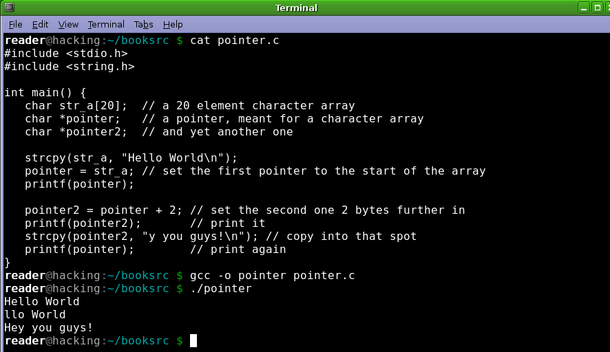
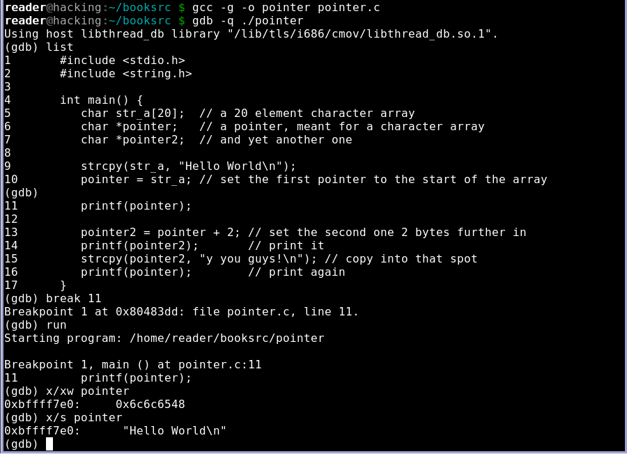
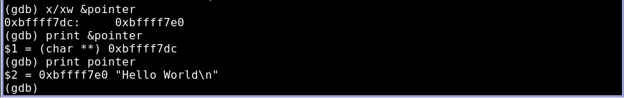
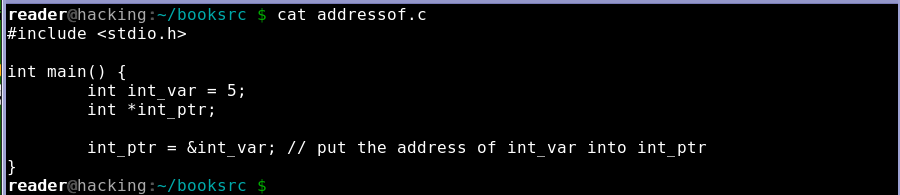
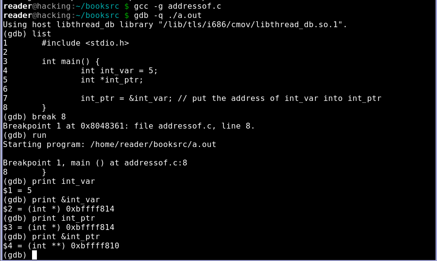
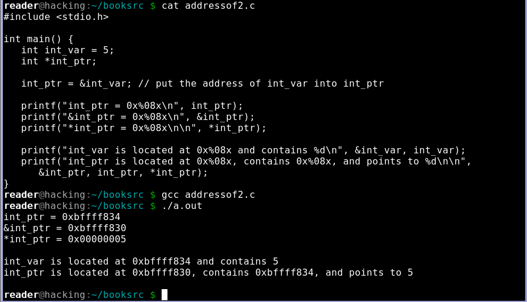

指针
1. 指针内容 pointer.c
2. 在11行处设置断点,将指针作为一个字符串检查时,给定字符串位于内存地址0xbffff7e0处，字符串本身并没有存储在指针变量中,只有内存地址0xbffff7e0存储在这个变量中.
3. 使用&运算符时会返回变量的地址,而非变量本身,显示指针变量在内存中位于地址0xbffff7dc处,它包含的内容是地址0xbffff7e0.
4. addressof.c
5. 使用GDB调试,设置一个断点,打印int_var的值，输出&int_var的内存地址，输出int_ptr包含int_var的地址和&int_ptr的地址.
6. *号是解除引用操作,用于解除内存地址，打印对应的数据值.
7. addressof2.c
